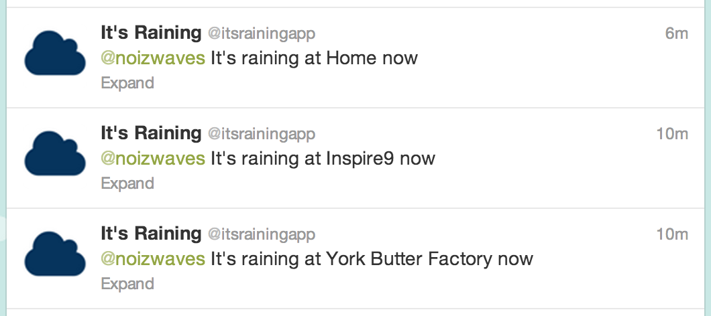

It's Raining via twitter by Adam Neumann (@noizwaves)
Tools
- Python 2.7.2
- ipython==0.13.1
- pypng==0.0.14
- twitter==1.9.1
- launchctl
Code
raining_at_home_tweet.py
#!/usr/bin/python
# Sends a tweet to @noizwaves from @itsrainingapp if it's raining at Home
import re
from tempfile import gettempdir
from os import path, listdir
from urllib import urlopen, urlretrieve
from twitter import Twitter, OAuth
from lat_long_to_pixels import get_image_coordinates
from data_from_image import get_rainfall_at
RADAR_PREFIX = 'IDR024'
RADAR_PAGE_URL = 'http://www.bom.gov.au/products/IDR024.loop.shtml'
RADAR_IMAGE_HOST = 'http://www.bom.gov.au'
RE_IMAGE_URL = re.compile('^theImageNames\[[0-5]\]\s=\s\"(.*?)\";$')
OAUTH_TOKEN = 'XXXX'
OAUTH_SECRET = 'XXXX'
CONSUMER_KEY = 'XXXX'
CONSUMER_SECRET = 'XXXX'
def update_radar_images():
"""
Ensures that we locally have a copy of the latest radar image
"""
# Download the radar webpage
html = urlopen(RADAR_PAGE_URL)
# Match lines '''theImageNames[0] = "/radar/IDR024.T.201302280718.png";'''
image_urls = list()
for line in html:
match = RE_IMAGE_URL.match(line)
if match:
rel_url = match.groups()[0]
image_urls.append(RADAR_IMAGE_HOST + rel_url)
# Order by timestamp descending
image_urls.sort(reverse=True)
# Download newest image to tempdir
newest_file = image_urls[0].split('/')[-1]
dest_path = path.join(gettempdir(), newest_file)
if not path.exists(dest_path):
print "Downloading '%s'" % dest_path
urlretrieve(image_urls[0], dest_path)
def get_latest_image():
# Returns the path of the newest radar image available
all_images = [f for f in listdir(gettempdir()) if f.startswith(RADAR_PREFIX)]
all_images.sort(reverse=True)
return all_images[0]
def compose_alert(location, alertee, rainfall):
"""
Compose and send an alert for a rainfall event
"""
msg = "%s It's raining at %s now" % (alertee, location[0])
t = Twitter(auth=OAuth(OAUTH_TOKEN, OAUTH_SECRET, CONSUMER_KEY, CONSUMER_SECRET))
t.statuses.update(status=msg)
def send_rain_warning(location, alertee):
"""
Sends a current raining warning to an alertee if it's raining at the given location
Arguments:
- location (3-tuple): of label, latitude, longitude)
- alertee (string): twitter handle of alert recipient
"""
update_radar_images()
latest_image = get_latest_image()
coords = get_image_coordinates(location[1], location[2])
rainfall = get_rainfall_at(latest_image, coords[0], coords[1])
if rainfall > 0:
compose_alert(location, alertee, rainfall)
if __name__ == '__main__':
alertee = '@noizwaves'
locations = [
('Home', -37.818705, 144.956988),
('York Butter Factory', -37.818705, 144.956988),
('Inspire9', -37.823957, 144.991105),
]
for location in locations:
send_rain_warning(location, alertee)
data_from_image.py
import png
import sys
RAINFALL_LEGEND = [
(0, (0, 0, 0, 0)),
(1, (245, 245, 255, 255)),
(2, (180, 180, 255, 255)),
(3, (120, 120, 255, 255)),
(4, (20, 20, 255, 255)),
(5, (0, 216, 195, 255)),
(6, (0, 150, 144, 255)),
(7, (0, 102, 102, 255)),
(8, (255, 255, 0, 255)),
(9, (255, 200, 0, 255)),
(10, (255, 150, 0, 255)),
(11, (255, 100, 0, 255)),
(12, (255, 0, 0, 255)),
(13, (200, 0, 0, 255)),
(14, (120, 0, 0, 255)),
(15, (40, 0, 0, 255)),
]
# convert to VALUE_MAP for value lookup via colour
VALUE_MAP = dict([(c, v) for v, c in RAINFALL_LEGEND])
# ignore these pixels when extracting rainfall values
STANDARD_HEIGHT = 512
STANDARD_WIDTH = 512
HEADER_HEIGHT = 16
FOOTER_HEIGHT = 16
# Extract the rainfall values (as a 2D array, indexed via [x,y]) from a
# standard radar image
def extract_values(filename):
"""
Extract the rainfall values (as a 2D array, indexed via [x,y]) from a
standard radar image. Raw data is returned from the image (ie. the header
and footer areas are removed).
"""
# load filename
reader = png.Reader(filename=filename)
w, h, pixels, metadata = reader.read_flat()
palette = metadata['palette']
assert w == STANDARD_WIDTH, 'filename not expected width (%s pixels)' % \
STANDARD_WIDTH
assert h == STANDARD_HEIGHT, 'filename not expected height (%s pixels)' % \
STANDARD_HEIGHT
# dimensions of our output
num_rows = w
num_cols = h - HEADER_HEIGHT - FOOTER_HEIGHT
values = [[0] * num_cols] * num_rows
# iterate over data in image, map to rainfall value
for i in range(HEADER_HEIGHT, h - FOOTER_HEIGHT):
for j in range(0, w):
point = (j, i) # format of (x, y) in the raw data space
position = get_pixel_position(point[0], point[1], w)
colour = palette[pixels[position]]
value = VALUE_MAP[colour]
target_x, target_y = (j, i - HEADER_HEIGHT)
values[target_x][target_y] = value
return values
def get_pixel_position(x, y, w):
return x + y * w
def get_rainfall_at(filename, x, y):
"""
Obtain the rainfall value of a given pixel
Arguments:
- filename (string): path to a given radar image
- x (int): x pixel coordinate on the radar image
- y (int): y pixel coordinate on the radar image
Returns: (float) representing current rainfall
"""
values = extract_values(filename)
# convert pixel coordinate into raw value coordinate
y -= HEADER_HEIGHT
# no change to x coord
return values[x][y]
if __name__ == '__main__':
if len(sys.argv) == 2:
print extract_values(sys.argv[1])
if len(sys.argv) == 4:
filename = sys.argv[1]
x = int(sys.argv[2])
y = int(sys.argv[3])
print get_rainfall_at(filename, x, y)
lat_long_to_pixels.py
#!/usr/bin/python
import sys
from math import cos, floor
LATITUDE = -37.852
LONGITUDE = 144.752
PIXELS_PER_KM = 0.25
# Functions for lat/long -> (x, y) conversion for 64km Melbourne radar image
# Radar image is centered at lat_center, lon_center
# Location being queries is lat, lon
# Logic devired by reverse engineering methods in http://www.bom.gov.au/scripts/radar/IDR.loop.v12.0.js
def get_image_y(lat_center, lat):
# Calculate the distance (in km) between lat and lat_center
return 1.1111 * 100 * (lat - lat_center)
def get_image_x(lon_center, lon, lat):
# Calculate the distance (in km) between lon and lon_center
return 1.1111 * 100 * cos(100 * lat / 5729) * (lon - lon_center)
def get_image_coordinates(lat, lon):
# For a given location, return the pixel coordinates on the Melbourne radar image
# Arguments:
# - lat (float): the latitude of the arugment location
# - lon (float): the longitude of the argument location
#
# Returns:
# (int, int) coordinates of the location on the image
x_delta_km = get_image_x(LONGITUDE, lon, lat)
y_delta_km = get_image_y(LATITUDE, lat)
x = int(floor(256 + x_delta_km / PIXELS_PER_KM))
y = int(floor(256 - y_delta_km / PIXELS_PER_KM))
return (x, y)
if __name__ == '__main__':
latitude = float(sys.argv[1])
longitude = float(sys.argv[2])
coords = get_image_coordinates(latitude, longitude)
print 'You are at exactly (x, y) of (%s, %s) on the radar image' % coords
Demo

Future
Currently thinking (and need help with):
- Short term predictions (via motion & object tracking, OpenCV, etc)
- Better visualisations (see darkskyapp.com)